Everything here is either a way of describing how fast an enzyme works or a way of changing it. The path above fixes what an enzyme may do: offer substrate an easier route to the transition state, and nothing more. The resulting rate is captured by two numbers, Km and Vmax, and every remaining topic is a perturbation that moves one of them, or neither. Learn which number each perturbation touches and the lecture collapses to one table.
An enzyme is a biocatalyst: it speeds a chemical reaction and emerges unchanged, converting substrate to product at a defined rate per unit time. Enzymes are protein, with one exception — ribozymes, which are catalytic RNA. Beyond raw speed they supply specificity and a handle for regulatory control, and they are extraordinarily efficient, running reactions 103–108 times faster than the uncatalyzed route.
Catalysis takes place in the active site, a pocket created when the protein folds, lined with side chains that both bind substrate and do chemistry. Binding is not passive: substrate induces a conformational change that closes the site around it and aligns the catalytic groups — induced fit, which replaced the older rigid lock-and-key picture. The enzyme–substrate complex converts to an enzyme–product complex and dissociates.
Many enzymes cannot work as bare protein. Which partner an enzyme needs, and how tightly it holds on to it, generates three pairs of terms that are routinely swapped for one another.
| ApoenzymeThe protein portion by itself. Inactive. | HoloenzymeApoenzyme plus its non-protein part. The catalytically competent form. |
| CofactorAn inorganic non-protein part — a metal ion. An enzyme requiring one is a metalloenzyme: carbonic anhydrase needs Zn2+, lysyl oxidase needs Cu2+. Also Fe2+, Mg2+. | CoenzymeAn organic non-protein molecule, usually derived from a vitamin. Splits further into cosubstrates and prosthetic groups. |
| CosubstrateA coenzyme that associates transiently and dissociates in an altered state — it has to be reconverted elsewhere. NAD+ (from niacin, B3), coenzyme A (pantothenate). | Prosthetic groupA coenzyme permanently associated with its enzyme, returned to its original state on the enzyme before it lets go. FAD (from riboflavin, B2), biotin. |
Every reaction is separated from its products by an energy barrier: reactants must pass through a high-energy intermediate, the transition state (T*), and the gap between reactants and that intermediate is the free energy of activation (Ea, ΔG‡). The barrier is what makes uncatalyzed reactions slow — at any moment only a small fraction of molecules carry enough energy to clear it, and the rate is set by how many do.
An enzyme opens an alternate route with a lower barrier, principally by binding and stabilizing the transition state, so a far larger fraction of molecules can cross and the reaction runs fast under the mild conditions of the cell. The uphill stretch is the whole problem; once it is behind, the fall to product is spontaneous.
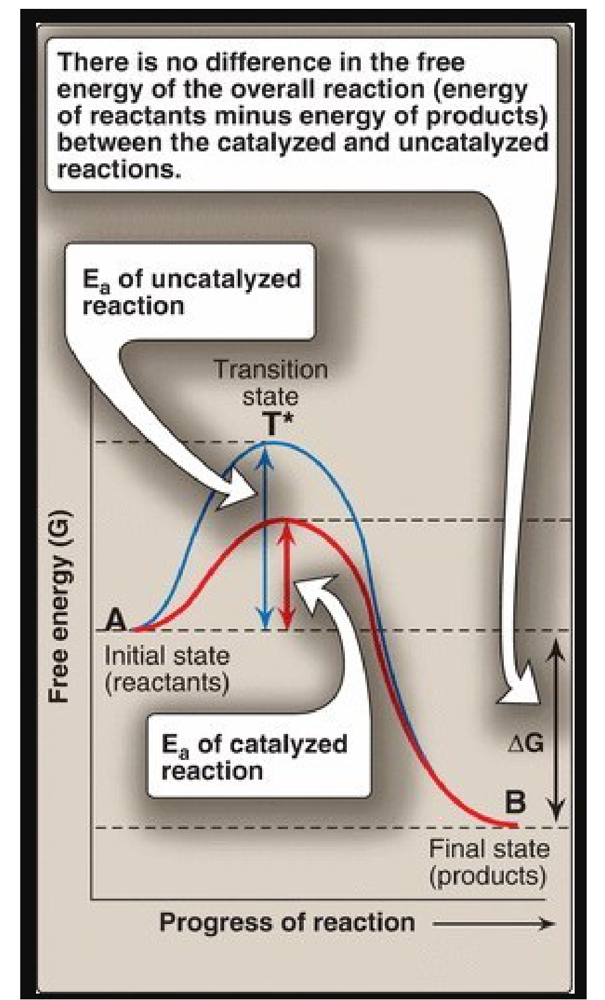
Every enzyme carries an EC number whose first digit is one of six reaction types. The numbering is fixed and is examined in that order, so learn the sequence, not just the six words.
| EC | Class | Reaction catalyzed | Example |
|---|---|---|---|
| 1 | Oxidoreductase | Oxidation–reduction: one substrate is oxidized, another reduced | Lactate dehydrogenase |
| ★ 2 | Transferase | Transfer of a functional group — C-, N- or P-containing — from one molecule to another. Every kinase is a transferase: it moves the phosphoryl group of ATP itself, which is not the same as using ATP as an energy source | Hexokinase; serine hydroxymethyltransferase |
| 3 | Hydrolase | Cleavage of a bond by adding water | Urease |
| 4 | Lyase | Cleavage of C–C, C–S or C–N bonds without water, often leaving a double bond | Pyruvate decarboxylase |
| 5 | Isomerase | Rearrangement of atoms within one molecule to give an isomer | Methylmalonyl-CoA mutase |
| 6 | Ligase | Joins two molecules into one, paid for by hydrolysis of a high-energy phosphate | Pyruvate carboxylase |
Enzymes are concentrated inside cells and have no job in plasma. The small amounts normally there arrive from ordinary cell turnover, with release balancing clearance, so levels sit inside a narrow reference range. Infection, toxins, poisons or trauma breach the membrane and spill the contents, and the degree of elevation tracks the extent of the damage. What limits the method is specificity: an enzyme found in many tissues tells you something was injured but not what.
| Enzyme | Principal diagnostic use |
|---|---|
| Alanine aminotransferase (ALT / SGPT) | Liver. Abundant in and most specific to hepatocytes; part of the liver function panel — viral hepatitis, toxic hepatic injury |
| Aspartate aminotransferase (AST / SGOT) | Liver, heart, skeletal muscle — a wide distribution, so less specific than ALT |
| Amylase · Lipase | Acute pancreatitis |
| Creatine kinase (CK) | Muscle disorders and myocardial infarction |
| Lactate dehydrogenase (LDH) | Myocardial infarction; also hepatic injury |
| γ-Glutamyl transpeptidase (GGT) | Various liver diseases |
| Ceruloplasmin | Wilson disease (hepatolenticular degeneration) |
| Acid phosphatase | Metastatic carcinoma of the prostate |
| Alkaline phosphatase | Bone disorders; obstructive liver disease |
A rise in ALT together with bilirubin indicates hepatocellular jaundice: hepatocytes are being destroyed and the surviving liver can no longer clear bilirubin. Mushroom poisoning produces exactly this pattern.
Isoenzymes (isozymes) are physically distinct forms of an enzyme that catalyze the same reaction. Their amino acid sequences differ, so they carry different numbers of charged residues and can be pulled apart by electrophoresis — all of them net negative, so all migrate toward the anode (+), just at different speeds. Because organs contain characteristic proportions of each form, the pattern in serum localizes the damage rather than merely reporting it.
| Isoenzyme | Subunits | Predominant tissue |
|---|---|---|
| CK-1 | BB | Brain |
| CK-2 | MB | Cardiac muscle — the only tissue carrying more than 5% of its total CK as MB, which is what makes a rise in the MB fraction over total CK virtually specific for myocardial infarction |
| CK-3 | MM | Skeletal muscle |
| LDH-1 | HHHH | Heart |
| LDH-2 | HHHM | The predominant form in normal serum |
| LDH-3 | HHMM | — |
| LDH-4 | HMMM | — |
| LDH-5 | MMMM | Liver — rises in acute hepatitis |
Normal serum runs LDH-2 > LDH-1. Myocardial infarction flips that order to LDH-1 > LDH-2, and the flip, not the absolute value, is the finding. One artefact ruins the test: red cells are full of LDH, so a haemolysed sample reads falsely high and blood must be handled gently.
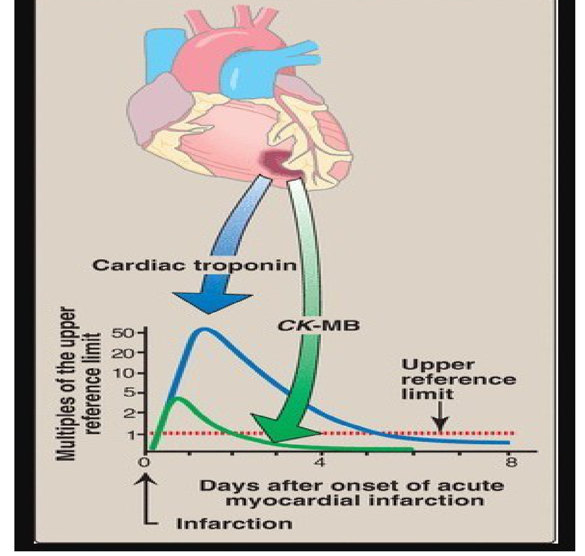
The accepted account of catalysis is the Michaelis-Menten model: enzyme and substrate combine reversibly into an ES complex, which then breaks down to free enzyme and product.
Velocity is directly proportional to [ES], so anything that raises or lowers the amount of ES changes the rate. Km is the ratio of breakdown of ES over formation of ES, which is where its inverse relationship with affinity comes from: an enzyme losing substrate faster than it captures it needs more substrate around to stay occupied.
Three assumptions make the model work. Substrate is in large excess over enzyme, so only a small fraction of it is bound at any time. The system is at steady state — ES is formed as fast as it breaks down, so [ES] does not change with time. And measurements are taken as initial velocities (vo), the instant enzyme and substrate are mixed, when almost no product exists: the reverse reaction can be ignored and there is no product inhibition.
| Km — the Michaelis constantThe substrate concentration at which v = ½Vmax. It is measured in units of concentration (mM). | Vmax — the maximal velocityThe velocity reached when every active site is occupied — saturation. Measured as product formed per unit time. |
| Measures the enzyme's affinity for that substrate, and does so inversely: low Km = high affinity, high Km = low affinity. A low Km means very little substrate suffices to half-saturate the enzyme. | Measures catalytic capacity: Vmax = kcat × [Et]. |
| Does not vary with enzyme concentration. It is a constant of one enzyme with one substrate, and reflects that enzyme's natural substrate. | Directly proportional to enzyme concentration — halve the enzyme and Vmax halves. It is the only one of the two that the amount of enzyme can move. |
A Michaelis-Menten plot approaches Vmax asymptotically, so the curve never visibly arrives and neither parameter can be read off it accurately. Plotting the reciprocals, 1/vo against 1/[S], straightens the curve into a line that can be extrapolated back — the Lineweaver-Burk or double-reciprocal plot. The price is that reciprocals magnify error: a small experimental error, especially at low [S] where 1/[S] is large, becomes a large error in the Km and Vmax you calculate.
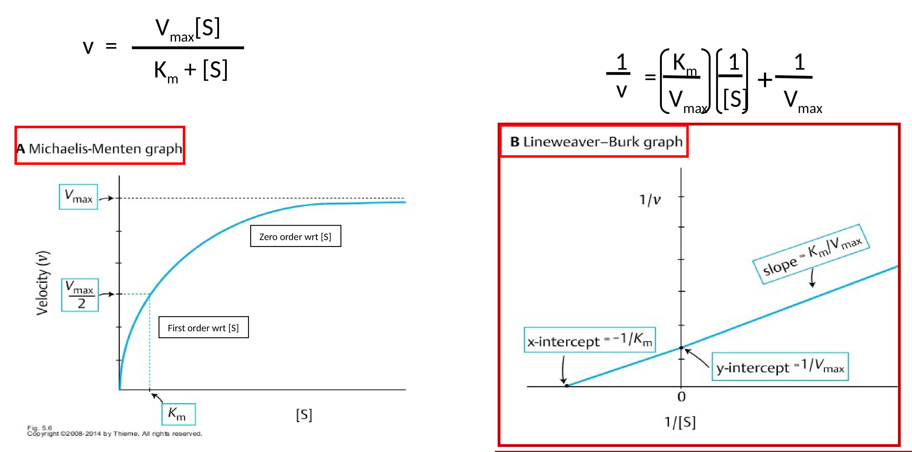
| Parameter | Definition |
|---|---|
| kcat — the turnover number | Moles of product formed per second per mole of catalytic centre. A property of the enzyme molecule itself, independent of how much of it is present |
| Unit of enzyme activity | The amount of enzyme producing a stated quantity of product per unit time, e.g. µmol product/min |
| Specific activity | Units per mg of protein. Because enzymes are protein, this rises as a preparation is purified and is used as a measure of purity |
Five things change the velocity of an enzyme-catalyzed reaction. Each has a characteristic plot, and recognizing the plot shape is usually the whole question — check the axes first, then the shape, then what moved.
| Factor | Shape of the v plot | What is happening |
|---|---|---|
| Substrate concentration | Hyperbolic | Velocity climbs with [S] until every binding site is occupied; the plateau is saturation |
| Enzyme concentration | Straight line through the origin | No plateau, because with substrate unlimited nothing caps the enzyme. This is the property exploited to measure how much of an enzyme is present in plasma, serum or tissue |
| Temperature | Bell curve | Rises as more molecules clear the energy barrier, peaks at the optimum, then collapses as heat denatures the protein |
| pH | Bell curve | Shifts the ionic charge on the side chains that bind substrate and perform catalysis; extremes of pH denature the enzyme outright |
| Activators and inhibitors | Curve shifts position | Objectives 4 and 5 |
Where an enzyme sits on its hyperbola relative to Km decides whether its rate tracks substrate supply or ignores it — and physiologically that is a design choice, made differently in different tissues.
| First order with respect to [S]Holds when [S] ≪ Km, the steep early part of the curve. | Zero order with respect to [S]Holds when [S] ≫ Km, the plateau. |
| Km + [S] ≈ Km, so the equation reduces to v = Vmax[S]/Km. | Km + [S] ≈ [S], so [S] cancels and the equation reduces to v = Vmax. |
| Velocity is proportional to substrate concentration — supply more substrate and the rate rises with it. | Velocity is independent of substrate concentration — the enzyme is saturated and more substrate achieves nothing. |
| The transporter parallel: GLUT2, in liver and pancreas, moves glucose in proportion to how much is there. | The transporter parallel: GLUT1 and GLUT3, in brain and red cells, move glucose at a constant rate whatever the blood level. |
Between the two regions, around [S] ≈ Km, the reaction is mixed order: neither approximation applies and the velocity is partly but not fully responsive to substrate.
Both enzymes catalyze the identical reaction — glucose + ATP → glucose-6-phosphate + ADP — which traps glucose inside the cell by putting a charge on it and commits it to metabolism. They differ only in their kinetic constants, and that difference is enough to give the liver and the brain opposite behaviour on the same blood glucose.
| Hexokinase — the high-affinity enzymeLow Km (≈0.05 mM) and low Vmax. Present in most tissues, notably brain and red cells, which are supplied by GLUT1 and GLUT3. | Glucokinase — the high-capacity enzymeHigh Km (≈10 mM) and high Vmax. Present in the liver and the islet cells of the pancreas, supplied by GLUT2. |
| The low Km lets it capture glucose efficiently even when blood glucose is low, which is what keeps brain and red cells — tissues that can never be without glucose — supplied during fasting. The low Vmax caps how much it can phosphorylate. | The high Vmax lets it phosphorylate glucose in bulk after a meal, when portal glucose is high, which is what the liver needs as the chief site of metabolism. |
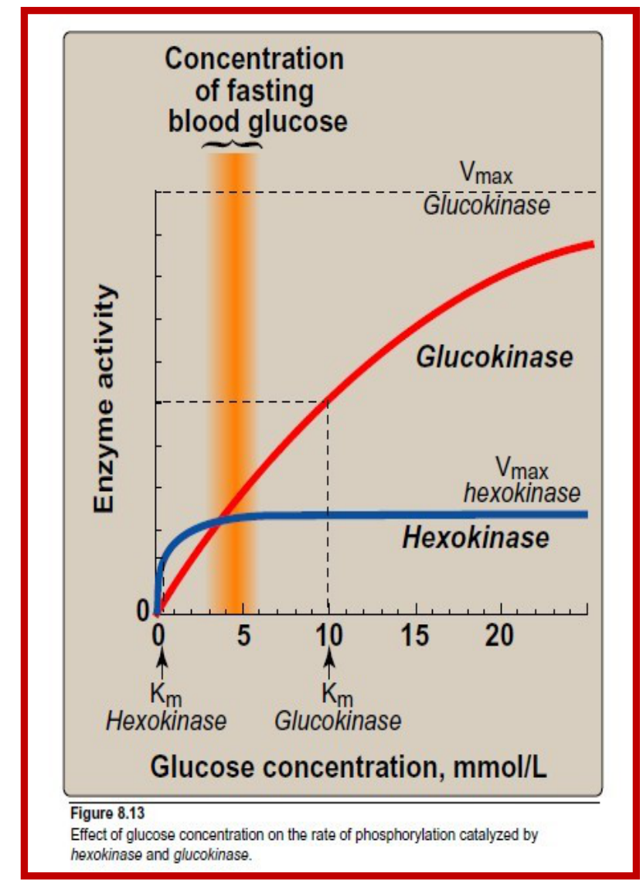
Both give bell curves because both destroy the enzyme at their extremes. Most human enzymes are optimal at 35–40 °C and begin to denature above 40 °C; the exception is the thermostable DNA polymerases used in PCR, from hot-spring organisms, with optima near 70 °C. pH works by changing the ionization of amino acid side chains, so a group that must be protonated is deprotonated as pH rises and activity falls away. Most human enzymes are optimal near pH 7.4, but an enzyme's optimum generally matches the compartment it works in.
| Enzyme | Optimum pH | Where it works |
|---|---|---|
| Pepsin | 1–2 | Stomach lumen |
| Acid phosphatase | 4–5 | Lysosome, prostate |
| Trypsin | 5–7 | Small intestine (its true peak lies at the alkaline end of that range) |
| Alkaline phosphatase | 9–10 | Bone, biliary epithelium |
An inhibitor is any compound that lowers the velocity of an enzyme-catalyzed reaction by binding to the enzyme — never to the substrate and never to the product. One structural fact sorts them: reversible inhibitors attach non-covalently, irreversible inhibitors attach covalently.
| CompetitiveThe inhibitor is a structural analog of the substrate. Because both need the same site, an ESI complex never forms — the enzyme has bound S or I, and the two states are mutually exclusive. | NoncompetitiveThe inhibitor has no structural resemblance to the substrate. It has its own site, so an ESI complex does form — substrate and inhibitor sit on the enzyme together, and no product comes out. |
Because a competitive inhibitor and the substrate contest a single site, which of the two an enzyme molecule is holding comes down to relative numbers. Enough substrate always wins that contest back and the reaction can still reach its original ceiling; what the inhibitor costs is the amount of substrate needed to get halfway there.
A noncompetitive inhibitor does not interfere with substrate binding at all, so the enzyme's grip on substrate is exactly what it always was. What falls is the number of enzyme molecules able to complete a catalytic cycle, and flooding the system with substrate cannot revive them.
An irreversible inhibitor forms a covalent bond at the active site, permanently subtracting that molecule from the pool of active enzyme, [Et]. A suicide inhibitor is the refined case: the enzyme itself converts the compound into the reactive species that then destroys it. Since the ceiling velocity depends on how much enzyme is present, losing enzyme lowers the ceiling — while the survivors are ordinary enzyme with an ordinary grip on substrate. A question has to tell you the bond is covalent, because the kinetics will not.
| NoncompetitiveThe enzyme molecule is occupied but structurally intact. Remove or dilute the inhibitor and full activity returns; [Et] never actually changed. | Irreversible / suicideThe enzyme molecule is destroyed. [Et] falls permanently and activity can only be restored by synthesizing new enzyme. |
The three differ along four dimensions, and a question will hand you one and expect the other three. The last column is what an exam is most likely to show you instead of state.
| Type | Binds at | Km (apparent) | Vmax (apparent) | Overcome by ↑[S]? | Lineweaver-Burk signature |
|---|---|---|---|---|---|
| ★ Competitive | Active site | Increased | Unchanged | Yes | Lines share the y-intercept (1/Vmax); the x-intercept moves toward zero |
| ★ Noncompetitive | Another site | Unchanged | Decreased | No | Lines share the x-intercept (−1/Km); the y-intercept rises |
| ★ Irreversible / suicide | Active site, covalently | Unchanged | Decreased | No — the bond is covalent | Identical to noncompetitive |
Whichever type is in play, the inhibited line on a Lineweaver-Burk plot always lies above the control line, because every inhibitor lowers v and therefore raises 1/v.
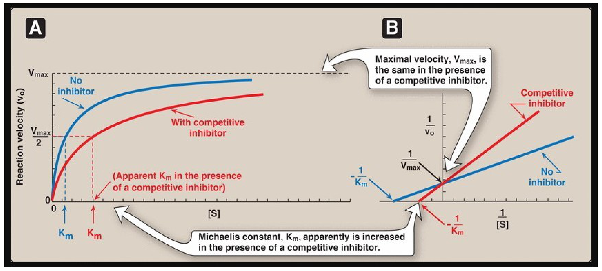
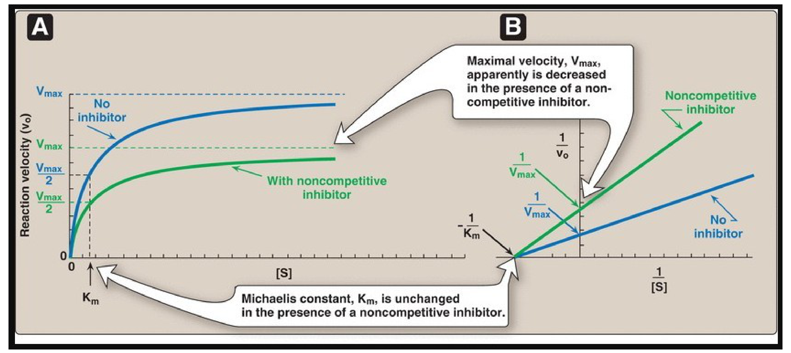
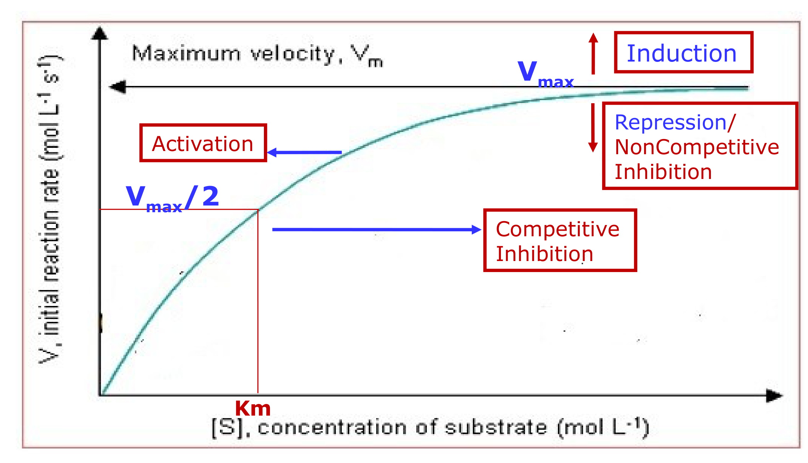
| Mechanism | Agent | Target enzyme | Consequence |
|---|---|---|---|
| Competitive | Statins — lovastatin, simvastatin, pravastatin | HMG-CoA reductase, the rate-limiting enzyme of cholesterol biosynthesis | Blocks hepatic cholesterol synthesis and lowers plasma cholesterol. The statin skeleton is a structural analog of HMG-CoA |
| Competitive | Methotrexate (MTX) | Dihydrofolate reductase (DHFR), which reduces dihydrofolate to tetrahydrofolate (THF) | Starves the cell of THF, which is needed for cell division — hence its use in chemotherapy and in rheumatoid arthritis. MTX is a close structural analog of folate |
| Noncompetitive | Physostigmine | Acetylcholinesterase | Acetylcholine is not degraded, so cholinergic neurotransmission is prolonged |
| Irreversible | Aspirin | Cyclooxygenase-1 and -2, covalently acetylated | Prostaglandin synthesis stops — the analgesic and anti-inflammatory effect |
| Irreversible | Disulfiram (Antabuse) | Acetaldehyde dehydrogenase | Acetaldehyde accumulates after a drink and the patient feels acutely ill — a learned aversion used in the treatment of chronic alcoholism |
| Irreversible | Cyanide · nerve gas · organophosphates | Various | The poison end of the same mechanism |
An allosteric enzyme is multimeric — built from several subunits — and carries a regulatory site distinct from the catalytic site, sometimes on a subunit that does no catalysis at all. A small molecule binding there produces a conformational change transmitted through the bulk of the protein to the active sites. Because the subunits are coupled, the first molecule to bind makes it easier for the next, so the response builds gradually. That cooperativity bends the velocity curve into an S, and is the same behaviour hemoglobin shows in binding oxygen. Allosteric enzymes frequently catalyze the committed step of a pathway, early and at a branch point — precisely where a cell would want a control knob.
| Michaelis-Menten (non-allosteric)Plot of v against [S] is hyperbolic. Active sites act independently. | AllostericPlot of v against [S] is sigmoidal. Subunits cooperate, so binding at one site alters the others. |
| Half-saturation is described by Km. | Has no Km. The half-saturation point is reported as K0.5 or S0.5, because the sigmoid does not obey the Michaelis-Menten equation. |
The small regulatory molecules that bind allosteric enzymes are allosteric effectors or modulators. They bind non-covalently and away from the catalytic site, and they come in both signs: positive effectors (activators) raise activity, negative effectors (inhibitors) lower it. When the effector is the enzyme's own substrate the effect is called homotropic — that is the cooperativity above; when it is some other molecule it is heterotropic, the case in feedback inhibition, where the end product of a pathway shuts down an enzyme several steps upstream.
| K-typeAlters the enzyme's affinity for substrate — K0.5 moves left (activator) or right (inhibitor). Vmax is unchanged. | V-typeAlters the enzyme's catalytic activity — Vmax moves up (activator) or down (inhibitor). K0.5 is unchanged. |
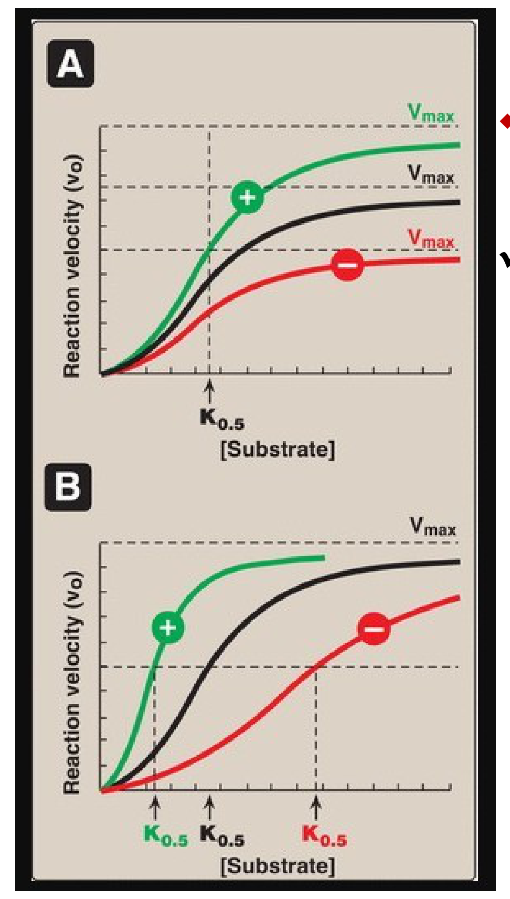
| Enzyme | Positive effectors | Negative effectors |
|---|---|---|
| Glycogen phosphorylase glycogen → glucose-1-phosphate | AMP, Ca2+ (muscle) | ATP, glucose, glucose-6-phosphate |
| Glycogen synthase glucose-1-phosphate → glycogen | Glucose-6-phosphate | — |
The signs above are deducible rather than memorizable, and the same logic works on every pathway you will meet. Read what the pathway is for: muscle degrades glycogen to make ATP, so a signal that ATP is short, or that the muscle is contracting, switches degradation on, and ATP itself switches it off. Then read the traffic: a pathway's entry molecule activates the enzyme that consumes it, and its products inhibit the enzyme that made them.
Allosteric regulation is one of the short-term mechanisms — with substrate concentration, product inhibition, proenzyme activation and reversible covalent modification — which act on enzyme molecules that already exist. Long-term regulation changes enzyme quantity instead, by induction, repression or degradation through the ubiquitin–proteasome and lysosomal pathways; compartmentalization changes enzyme location. All are developed in Lecture 01.
Cover the answers. Say each one out loud before you look — the goal is recall, not recognition.
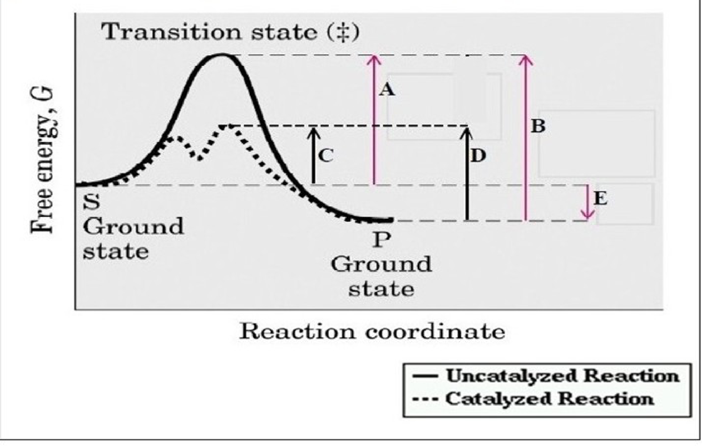
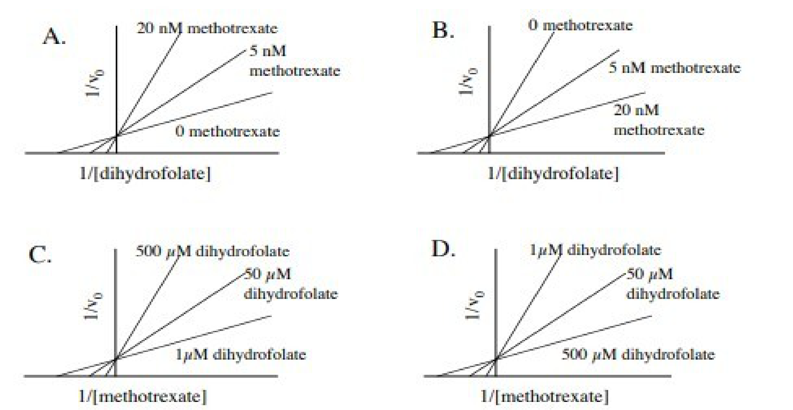
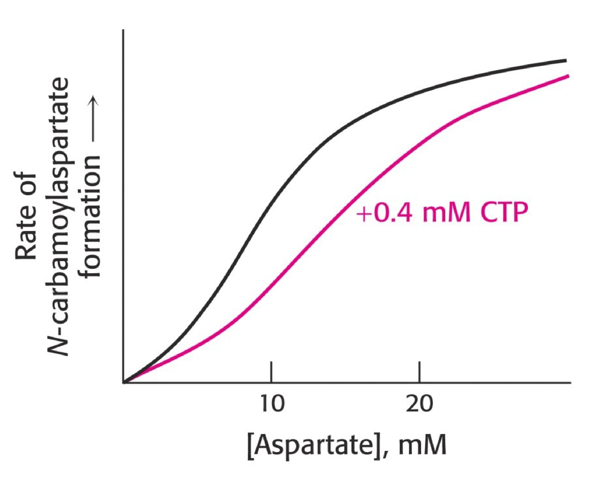
Bold = highest-yield. If you review one page, review this one.
| Competitive | Noncompetitive | Irreversible / suicide | |
|---|---|---|---|
| Binds at | Active site | Other site | Active site, covalent |
| Km | ↑ Increased | Unchanged | Unchanged |
| Vmax | Unchanged | ↓ Decreased | ↓ Decreased |
| Overcome by ↑[S]? | YES | No | No |
| Lineweaver-Burk | Shared y-intercept | Shared x-intercept | Shared x-intercept |
| Hyperbola moves | Right | Down | Down |
| ESI complex | Never | Yes — inactive | — |
Enzyme = biocatalyst, unchanged by the reaction; 103–108× faster
Protein — except ribozymes (RNA)
Active site = binding + catalytic residues; induced fit
Holoenzyme = apoenzyme + non-protein part; apoenzyme alone is INACTIVE
Cofactor = inorganic (metal) → metalloenzyme
Coenzyme = organic, vitamin-derived
Cosubstrate — transient, leaves ALTERED: NAD+, CoA
Prosthetic group — permanent, returns to ORIGINAL: FAD, biotin
NAD+ ← niacin B3 · FAD ← riboflavin B2
Carbonic anhydrase — Zn2+ · Lysyl oxidase — Cu2+
Ea = reactants → transition state T*
Enzymes lower Ea by stabilizing T*
NEVER change ΔG, ΔG°′, Keq, or the equilibrium position
Only the rate at which equilibrium is reached; forward and reverse accelerated equally
1 Oxidoreductase — redox (LDH)
2 Transferase — group transfer (all kinases; hexokinase)
3 Hydrolase — cleaves with water (urease)
4 Lyase — cleaves without water (pyruvate decarboxylase)
5 Isomerase — rearrangement (methylmalonyl-CoA mutase)
6 Ligase — joins two, costs ATP (pyruvate carboxylase)
ATP present ≠ ligase — a kinase transfers the phosphoryl group itself
Serum enzymes come from normal cell turnover; a rise = tissue damage, magnitude = extent
ALT — most liver-specific · AST — wider distribution
ALT + bilirubin ↑ = hepatocellular jaundice (mushroom poisoning)
Amylase, lipase — pancreatitis · Ceruloplasmin — Wilson
Acid phosphatase — prostate · Alk phos — bone, obstructive liver · GGT — liver
Isoenzymes: same reaction, different sequence → electrophoresis; all negative → migrate to anode (+)
CK-1 BB brain · CK-2 MB heart · CK-3 MM skeletal
Myocardium = only tissue >5% of CK as MB
LDH-1 HHHH heart · LDH-2 HHHM normal · LDH-5 MMMM liver
Normal LDH-2 > LDH-1; MI flips to LDH-1 > LDH-2
CK-MB: 4–8 h → peak 24 h → normal 48–72 h
Troponin T/I: 4–6 h → peak 8–28 h → elevated 3–10 days — now the standard
Haemolysis falsely raises LDH
E + S ⇌ ES → E + P · v = k3[ES]
vo = Vmax[S] / (Km + [S])
Km = (k2 + k3)/k1 — breakdown ÷ formation of ES
Assumptions: [S] ≫ [E] · steady state · initial velocity (no product inhibition)
Km = [S] at ½Vmax — a CONCENTRATION
LOW Km = HIGH affinity · HIGH Km = LOW affinity
Km NEVER varies with [E]
Vmax ∝ [E] · Vmax = kcat × [Et]
kcat = turnover number = mol product/s per mol catalytic centre
Specific activity = units/mg protein = purity
1/v = (Km/Vmax)(1/[S]) + 1/Vmax
y-int = 1/Vmax · x-int = −1/Km · slope = Km/Vmax
Straightens the curve — but reciprocals magnify error
The inhibitor line is ALWAYS above the control line
[S] ≪ Km → first order, v ∝ [S], v = Vmax[S]/Km → GLUT2, liver + pancreas
[S] ≫ Km → zero order, v = Vmax → GLUT1 & 3, brain + RBC
Around Km = mixed order
[E]: straight line through origin — the basis of serum enzyme assays
Temperature: bell; optimum 35–40 °C; exception thermostable DNA polymerase (PCR)
pH: bell; changes side-chain ionization; most ≈7.4
Pepsin 1–2 · acid phosphatase 4–5 · trypsin 5–7 · alk phos 9–10
HK: low Km ≈0.05 mM, low Vmax — brain, RBC, most tissues; GLUT1/3; high AFFINITY
GK: high Km ≈10 mM, high Vmax — liver + pancreatic islets; GLUT2; high CAPACITY
GK = β-cell glucose sensor, sets the insulin threshold
Blood glucose ≈5 mM sits BELOW the GK Km → the liver can release glucose instead of trapping it
Both: glucose + ATP → G6P, which traps glucose in the cell
① Can excess substrate overcome it? Yes → competitive. No → Vmax falls
② Covalent? Yes → irreversible/suicide. No → reversible
The inhibitor binds the ENZYME, never substrate or product
Competitive = structural analog · Noncompetitive = no resemblance
Suicide = the enzyme itself makes the reactive species that kills it
Competitive: statins → HMG-CoA reductase (rate-limiting, cholesterol synthesis) · methotrexate → DHFR → ↓THF; chemo + rheumatoid arthritis
Noncompetitive: physostigmine → acetylcholinesterase
Irreversible: aspirin → COX-1/COX-2 → ↓prostaglandins · disulfiram → acetaldehyde dehydrogenase (Antabuse) · poisons: cyanide, nerve gas, organophosphates
Hyperbola → look for what CHANGED. Lineweaver-Burk → look for what is UNCHANGED.
UP = Vmax↑ = induction
DOWN = Vmax↓ = repression OR noncompetitive/irreversible — indistinguishable
RIGHT = Km↑ = competitive inhibition
LEFT = Km↓ = activation
Procedure: y-axis → x-axis → shape → what moved
Multimeric · committed step · SIGMOID curve · NO Km (use K0.5 / S0.5)
Sigmoid comes from cooperativity between subunits — same as haemoglobin
Hyperbolic = Michaelis-Menten/non-allosteric; sigmoid = allosteric
Effectors: non-covalent, bind a site ≠ catalytic site, cause a conformational change; positive or negative
Homotropic = the substrate itself · Heterotropic = a different molecule (feedback inhibition)
K-type alters affinity (K0.5) · V-type alters catalytic activity (Vmax)
Glycogen phosphorylase: − ATP, glucose, G6P · + AMP, Ca2+ (muscle)
Glycogen synthase: + G6P
ATCase: − CTP, a K-type negative effector (end-product feedback)
Deduce the sign from the purpose of the pathway
Short term (existing enzyme): [S] · product inhibition · proenzyme activation · reversible covalent modification · allosteric
Long term (enzyme quantity): induction · repression · degradation (ubiquitin–proteasome, lysosomal)
Compartmentalization = location
Developed in Lecture 01.